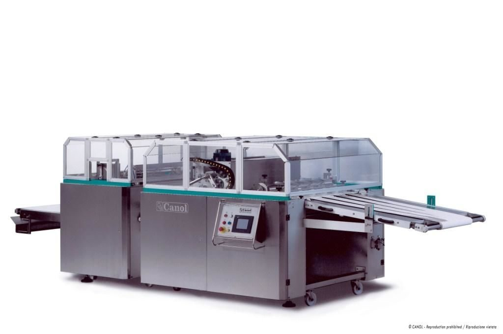
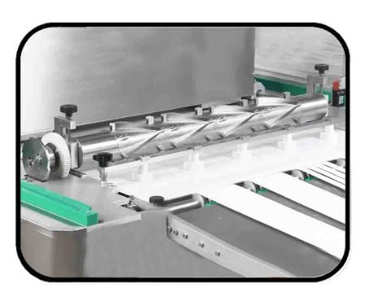
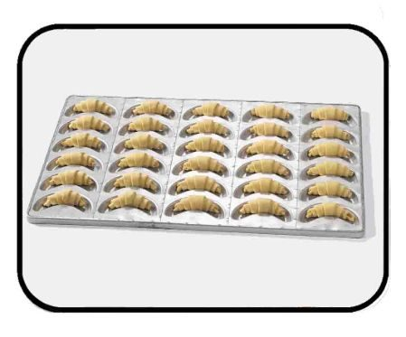
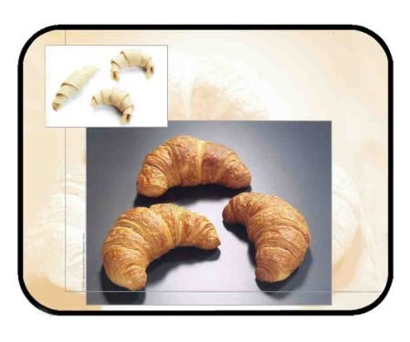
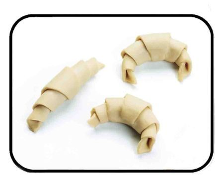
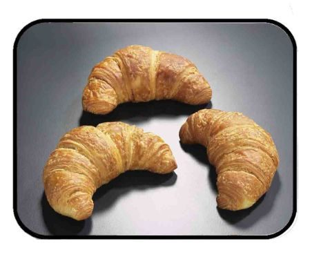

CANOL
Линии для круассанов
Автоматическая линия нарезает тестовую ленту, ориентирует заготовки и формует круассаны. Готовые заготовки поступают на транспортёр.
- Нарезка и формование
- Модульное исполнение
Фотографии и схемы










Описание и комплектация
Линия CANOL для круассанов используется для организации непрерывного цикла производства круассанов. Оборудование CANOL выполняет следующие операции: нарезка теста, скручивание в круассаны, выкладка изделий рядами для дальнейшего размещения на противнях.
- Производитель: Италия
- Возможность приготовления круассанов любой формы
- Качество не хуже ручного скручивания, при гораздо более высокой производительности
Компания TRADE TECHNOLOGIES поставляет оборудование CANOL на правах представителя в Россию и ряд стран СНГ (Грузия, Белоруссия, Казахстан). После доставки на объект заказчика производится монтаж оборудования и пусконаладочные работы, возможно дальнейшее обслуживание.
3 этапа рабочего цикла
- Нарезка: Эту операцию производит вал нарезки теста на заготовки в виде треугольников. Он оснащен устройствами, которые предотвращают налипание теста на резцы. Заменить режущие валы при необходимости можно за несколько секунд. Полотно, по которому движутся тестовые треугольники, имеет дифференциированную скорость движения, за счет чего заготовки равномерно распределяются на ленте транспортера и подаются на устройство скручивания.
- Вращение: Линия CANOL для круассанов включает вращающее устройство для поворота треугольников перед их поступлением на скручивающее устройство. Процесс работы вращающего устройства максимально отлажен для упрощения смены продукции и чистки оборудования CANOL.
- Скручивание: Регулировать плотность скручивания круассанов можно путем закрытия или открытия транспортерных лент. Они крутятся в противоположных направлениях, имеют разную скорость оборотов. Скрученный таким образом круассан по качеству не уступает скрученному вручную. Транспортеры устройства скручивания легко заменить для оперативной очистки.
По окончании цикла работ заготовки подаются на ленточный транспортер и перемещаются на выход для дальнейшей транспортировки.
Оборудование CANOL для производства круассанов в целях наибольшей мобильности оснащено колесами, а для устранения вибраций эти колеса блокируются в нужном положении с помощью противовибрационных ножек.
Большой ассортимент аксессуаров и модульный принцип линий CANOL делает возможным изготовление круассанов любой формы в промышленных масштабах.
Материалы производителя
CANOL проектирует оборудование для пекарен и кондитерских в Италии с 1973 года. Мы поставляем линии на правах представителя завода.
Стоимость и поставка
Стоимость рассчитываем по комплектации. Для оборудования CANOL доступны выкуп, лизинг и рассрочка. Безналичная оплата в рублях по курсу ЦБ РФ на день оплаты. В предложенной схеме платежи составляют 30%, 60% и 10%, последний платёж — после ввода в эксплуатацию.